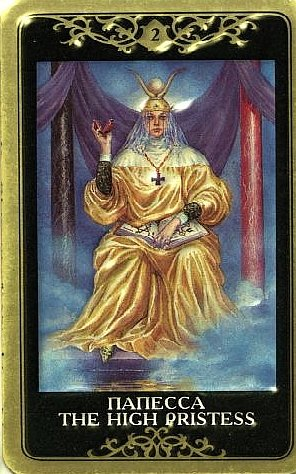

Данный образ связывают с тонкой чувствительность, внутренним голосом, пониманием, терпением, снисходительности.
Если вопрос гадающего связан с работой, профессиональной сферой, то карта указывает на полную самоотдачу, помощь, доверие.
Жрица — символ женской стороны личности и явления, при которой глубокое сострадание может соседствовать с коварством аспида.
Очень неконкретная карта.

Основное значение Жрицы - мудрость, знание, понимание, способность учиться, учить, постигать таинства и посвящать в таинства.
В раскладе эта карта сообщает, что потихоньку на свет выйдет информация, которая заставит посмотреть на все под другим углом зрения.
В ситуации присутствует влияние неких скрытых факторов, нечто тайное. Это надо принять как есть – мы не можем знать, контролировать и предвидеть все на свете.
Иногда Жрица является просто указанием на некоторое лицо женского пола (жену, мать, дочь, сестру, подругу, начальницу, соперницу).
Но чаще Второй Аркан Таро символизирует присутствие тайны. О ее характере могут дать подсказку другие карты расклада. Сходу эту тайну узнать сложно, она откроется в свое время.
Аркан Великой Жрицы советует обращать внимание на «мелкие совпадения» и внимательно прислушиваться к различного рода подсказкам, указателям на жизненном пути (то есть - держаться за каждый знак, который ты почему-то осознал, как обращенный к тебе).
Жрица олицетворяет наши неосознаваемые силы - интуицию, предчувствие, часто необъяснимую, но вполне твердую уверенность в чем-то. Это - ключ к той таинственной истине, которая ускользает от логически мыслящего разума.
Необходимо обратить внимание на подсознание, сны. Знание, которое ты ищешь, внтури тебя, и чтобы найти его, нужно обойти свое крутое сознание.
Выпадая в раскладе, Жрица подчеркивает спокойствие и уход в себя.
Она говорит, что необходимо провести какое-то время в размышлении, более в поисках покоя, чем ответов и решений, и они придут сами в какой-то момент.
Все «быстрей-быстрей» должны быть отставлены. Жрица связана с принятием воли внешних событий и смирением с ними. Она говорит об уединении, возможности прислушаться к естественным ритмам и циклам природы, тела и души. Не исключено, что развитие ситуации повлечет за собой ощутимое просветление и личностный рост.
Индивидуальное познание, развитие талантов, духовная мудрость. Знание, учеба, изучение и постижение чего-либо. Особенно это относится к оккультным знаниям, но может иметь отношение и к профессионализму вообще, когда в высоких состояниях сознания постигается суть каких-либо вопросов. Это может быть и сам поиск этих высоких озаренных и просветленных состояний, и указание на их наличие, «только слушай». Интуиция, озарение. Способность предвидеть и прорицать. Внимательность к знакам и символам, умение прочувстовать благоприятный момент, по достоинству оценить стечение обстоятельств, которое иначе как мистическим не назовешь. В ведении Жрицы – непостижимые события, таинственные совпадения, всевозможные знаки, которые посылает нам жизнь, и подсказки, которые дает подсознание (вроде случайно услышанной фразы, явно являющейся ответом на твои мысли). Выпадая в раскладе, она напоминает, что Жизнь – это Таинство.
Второе значение - неизвестность, неясность перспектив и неопределенность будущего.
Это секрет, который откроется в свое время.
Как результирующая карта расклада, Жрица говорит: не загадывай на будущее, время для ответа еще не пришло.
Присутствие Жрицы может говорить о том, что в ситуации присутствует некий скрытый фактор, секрет, о котором еще предстоит узнать. На принятие решения, исход событий могут повлиять какие-то тайные мотивы, неизвестные аспекты дела, неявные моменты.
В этом «знании» (первое значение) и «незнании» (второе значение) - лишь кажущееся противоречие. Жрица учит, что знание уже есть внутри нас. Как часто мы какое-то время идем вслепую, а потом кричим «Да я же всегда это знал!». Жрица как раз об этом. И еще о том, что учиться – это значит узнавать то, что ты и так знаешь. Ведь все мы очень многому в жизни научились вовсе не у других, а у себя самих! Это происходит, когда находим время и силы сконцентрироваться на собственной духовной индивидуальности, или, выражаясь каббалистически, на потоке, соединяющем «Кетер» нашего высшего разума с «Тиферет» нашего сердца.
ЛИЧНЫЕ ОТНОШЕНИЯ
На бытовом уровне у Жрицы неважная репутация в области личной жизни, потому что это вообще не «бытовая» карта, и она не всегда проявляется гармонично на том уровне, на котором обычно развиваются события и задаются вопросы.
Ее связанность с тайной выливается в значение «другой», тайной женщины, влияющей на ситуацию, о чем пока неизвестно. С тем же успехом (!) Жрица может описывать и другого мужчину, также третью сторону любовного треугольника.
В старинных толковниках присутствие Жрицы в раскладе связывалось с подавленными, невыраженными чувствами (тайной влюбленностью) и платоническими отношениями, без половой близости.
Это также карта скрытых, тайных или неопределенных отношений (или по крайней мере, чувств). Она напоминает, что «сердце женщины – это океан тайн». И сердце мужчины тоже. Кстати, мужчинам карта предвещает встречу с понимающей и любящей женщиной, настоящим сокровищем.
Современные тарологи считают, что Жрица может характеризовать качество отношений как таковое, акцентируя глубинную связь партнеров. Пожалуй, мы все такое хоть раз видели: люди не выглядят безумно влюбленными, но чувствуют друг друга на расстоянии, понимают друг друга с полуслова и едва успев подумать, что надо бы поговорить, слышат телефонный звонок. Здесь есть доверие и привязанность, но и нечто большее, попросту мистическое, что нередко сказывается в поразительных совпадениях и дополнениях, например, в характере новогодних подарков, которые оба покупали как бы независимо друг от друга, не зная, что намеревается подарить другой. Здесь присутствует практически сверхчувственная связь (которая может казаться им обоим странной – непонятно почему она есть). В таких отношениях обычно отсутствует императивность и выяснения, кто в доме хозяин. Никто не поднимает шума, ни на чем не настаивает, и иногда создается впечатление, что люди вообще почти не разговаривают. Им можно уже не говорить. Это телепатия, грозящая перейти в телекинез.
Считается, что это карта одиночества, связанного с личным аскетизмом и мистическими знаниями.
На самом же деле Жрица не столько исключает отношения, сколько указывает на слабую предрасположенность к их созданию. Ее сущность – неограниченная независимость. Ее вера в себя и ответственность перед собой очень велики, поэтому она излучает чувство самодостаточности. Это не поза, а результат принятия себя. Жрица – это колоссально устойчивый личностный модус. Она не склонна падать со своих высот (или всплывать со своих глубин, кому как нравится). Так же, как Императрица инстинктивно защищает жизнь в своем чреве (состояние беременности), так Жрица инстинктивно защищает высшие истину и мудрость, которые в себе носит и которые имеют слабое отношение к обыденным заботам. Ее очень сложно «стащить» на бытовой уровень и «подстроить» к суетному социуму. Она не станет флиртовать, высчитывать виды на женихов и носиться по тусовкам. Но она может так посмотреть к глаза, что кому суждено, тот пропал.
Жрица описывает сдержанного, загадочного и очень тонко понимающего партнера. Это непостижимый человек, у него может быть много тайн разного свойства. Но брутально он никогда себя не поведет. Он терпелив, мудр, проницателен. От него скрыть невозможно практически ничего, даже мысли, и он довольно отчетливо ощущается как жизненный учитель, показывающий иной способ мировоззрения. Его советы поистине бесценны. Ему не обязательно видеть человека, чтобы его знать. Отличительная черта этого партнера – молчаливость, при которой контакт полностью сохраняется.
В сексуальном плане Жрица тантрична и целительна. Она терпелива и чутка. Ей присуще искусство направлять процесс взаимообмена энергий, будучи ведомой. По Жрице идет сексуальный опыт, оказывающий целительное, внутренне трансформирующее воздействие.